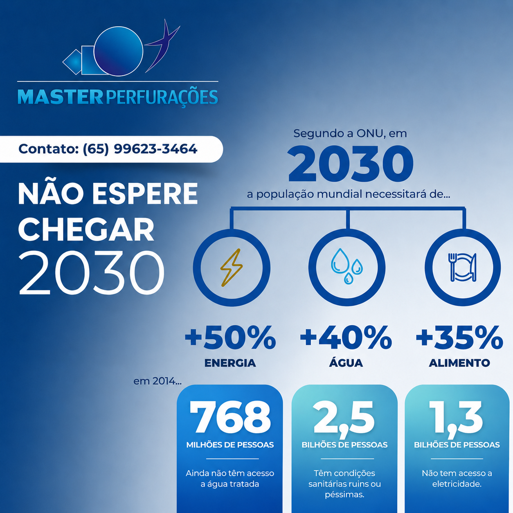
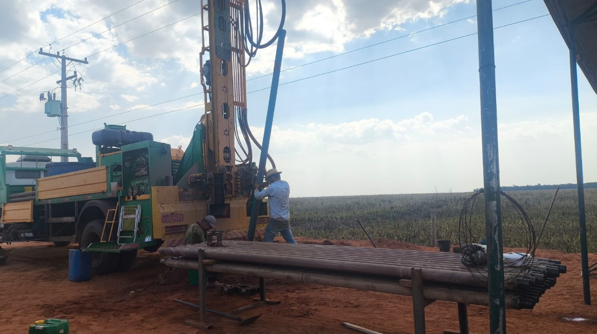
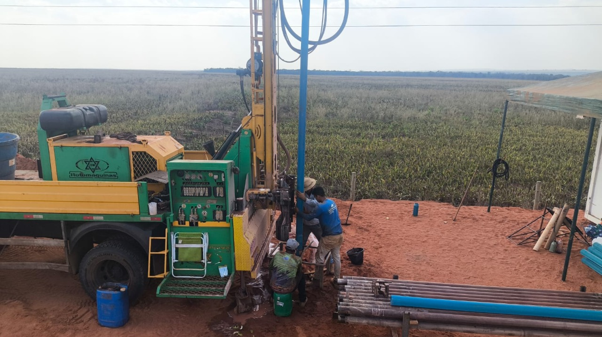
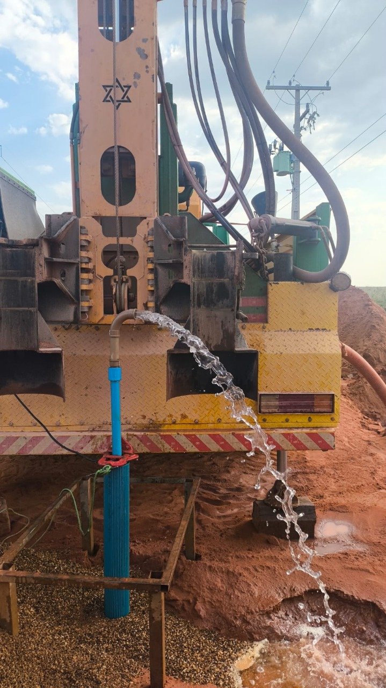

Água limpa e segura para sua propriedade. Atendemos Lucas do Rio Verde, cidades vizinhas e fazendas em todo Mato Grosso.

A Master Perfurações é uma empresa especializada em perfuração de poços artesianos, atuando há mais de 10 anos no mercado de Mato Grosso. Trabalhamos com materiais de primeira linha e equipamentos modernos, garantindo agilidade, segurança e qualidade em cada projeto.
Nossa equipe é qualificada e comprometida com a satisfação do cliente, realizando perfurações completas em até 2 dias, com toda a responsabilidade que o serviço exige.
Soluções completas em captação de água subterrânea para residências, propriedades rurais e empresas.
Perfuração profissional com maquinário moderno. Concluímos a maioria das obras em 1 a 2 dias, com eficiência e segurança.
Instalação completa de revestimento e tubulação com materiais de primeira linha, garantindo a durabilidade da obra.
Limpeza, desobstrução e manutenção preventiva para garantir a vazão e qualidade da água do seu poço.
Especialistas em atender fazendas, sítios e propriedades rurais com deslocamento para toda a região de Mato Grosso.
10 anos no mercado com centenas de poços perfurados em cidades e fazendas da região.
Perfuramos um poço em 1 a 2 dias, sem comprometer qualidade e segurança.
Utilizamos apenas materiais de alta qualidade, garantindo durabilidade e eficiência do seu poço.
Profissionais treinados e em constante atualização para melhor atender nossos clientes.
Atendemos Lucas do Rio Verde, cidades vizinhas e fazendas em todo o estado de Mato Grosso.
Trabalhamos com responsabilidade e compromisso total com a satisfação de cada cliente.
Tudo começou com uma conversa embaixo de uma árvore entre dois rapazes sem trabalho. Sem formação formal na área, eles construíram sua própria máquina caseira e deram os primeiros passos no mundo da perfuração.
Com dedicação e muita persistência, foram aperfeiçoando técnicas e conhecimentos. Cada poço era uma nova lição, e o aprendizado constante foi transformando amadores em especialistas.
A empresa ganhou reconhecimento regional. Os poços que antes levavam semanas passaram a ser concluídos em 1 ou 2 dias, reflexo do alto nível de qualificação atingido.
Com 10 anos de mercado, a Master Perfurações é referência em perfuração de poços artesianos em Mato Grosso. Seguimos aprendendo para melhor atender nossos clientes, com gratidão, responsabilidade e excelência.



Acompanhe alguns dos nossos trabalhos realizados em residências.
Entre em contato agora mesmo e solicite seu orçamento sem compromisso!
Estamos prontos para atender você. Solicite um orçamento gratuito!